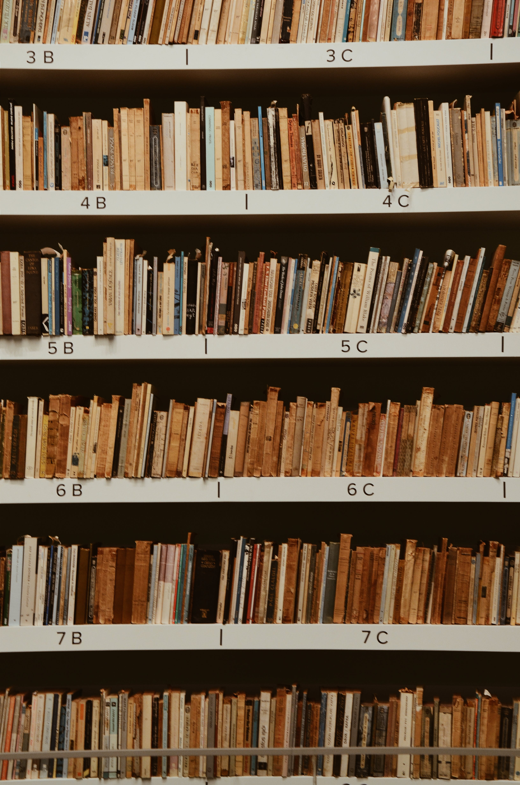

Welcome to Books N Brew
Welcome to Books N Brew, where the enticing aroma of expertly brewed coffee mingles with the allure of captivating stories. Nestled in our community, we offer a curated selection of books ranging from timeless classics to contemporary gems. Sip on our handcrafted coffees while immersing yourself in the literary treasures lining our shelves. At Books N Brew, we believe in the harmonious marriage of great coffee and great books, creating a haven for both the avid reader and the coffee connoisseur. Whether you're seeking a quiet reading retreat or a lively book club discussion, indulge in the perfect blend of literary escape and caffeinated bliss at Books N Brew.
Award Winning Coffee
Great Selection of Books
